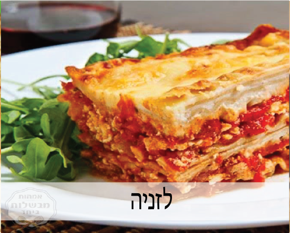
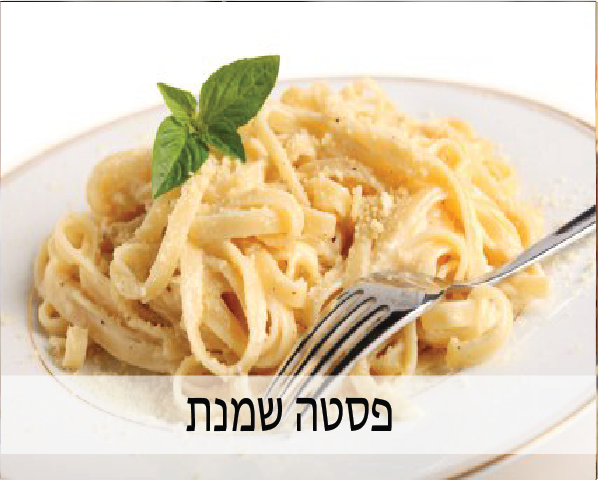
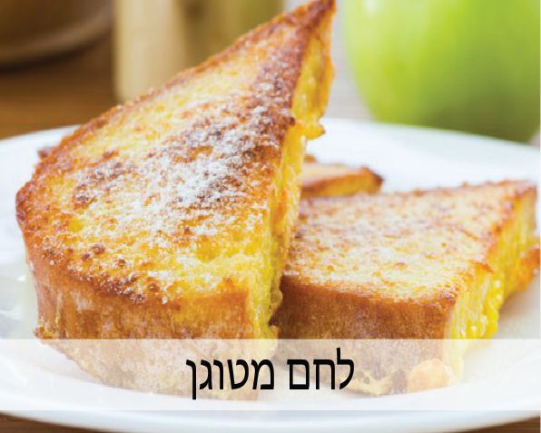
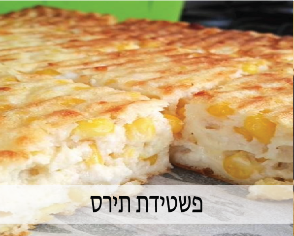
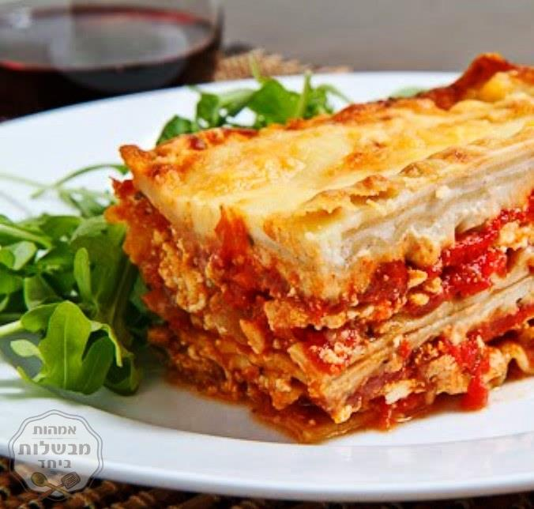
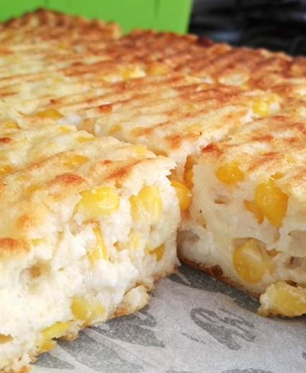
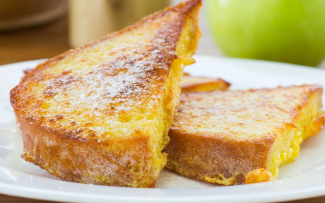
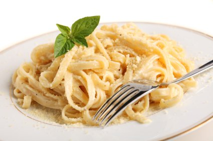

מתכונים
|  |  |
|  |  |
לזניה
מצרכים:
- קופסת עלי לזניה
- 1 קוטג'
- 1 גבינה לבנה
- 100 גרם גבינה צהובה מגורדת
- פחית עגבניות מרוסקות
- 2 כפות רסק עגבניות
- 2 שיני שום קצוצות
אופן הכנה:
- בקערה מערבבים את שלושת סוגי הגבינה.
- להכנת הרוטב נכניס לסיר את העגבניות המרוסקות, רסק עגבניות, שום, מעט מלח, פלפל, ואורגנו.
-
עכשיו ההרכבה: בעזרת מצקת יוצקים רוטב עגבניות על תחתית התבנית - לא הרבה. ואז שופכים 1/2 מכמות הגבינה.
יוצקים שוב רוטב ואז מכסים שוב בעלי לזניה עד שיש שלוש שכבות לבסוף נשפוך את כל הרוטב ונפזר מעל גבינה מגורדת. - מכניסים לתנור שחומם מראש ל 180 מעלות, עד שהגבינה מבעבעת והעלים רכים בערך כ-30 דקות.
פשטידת תירס
מצרכים:
- 100 גרם גבינה צפתית מגורדת
- 1/2 קוטג'
- 2 כפות גבינה לבנה
- 100 גרם גבינה צהובה מגורדת
- 2 כוסות גרגירי תירס
- 2 כפות קמח
- כפית אבקת אפייה
- 3 ביצים
אופן הכנה:
- בקערה גדולה נטרוף את הביצים ונוסיף את הגבינות ואת כל המצרכים מלבד הקמח.
- את הקמח נוסיף בהדרגה ותוך כדי בחישה, עד שהוא נעלם לגמרה ואין גושים.
- נשמן תבנית מרובעת בינונית וניצוק לתוכה את בלילת הפשטידה.
- נאפה בתנור חם על 180 מעלות עד להזהבה, בערך 40 דקות אפייה.
- נוציא מהתנור, נצנן לטמפרטורת החדר ונגיש
לחם מטוגן
מצרכים:
- 3 ביצים
- 1/2 כוס חלב
- 8 פרוסות לחם/חלה
- חצי חצי כוס שמן
אופן הכנה:
- נטרוף את הביצים בקערה, נוסיף את החלב ונערבב.
- טובלים את הלחם בתערובת.
- מטגנים כ- 4 דקות מכל צד עד להשחמה
- מוציאים מהמחבת ומניחים על צלחת עם נייר סופג.
פסטה בשמנת
מצרכים:
- חצי חבילת פסטה
- חבילת פטריות
- 1 שמנת לבישול
אופן הכנה:
- מרתיחים סיר מים חמים על הגז ומבשלים את הפסטה לפי הוראות ההכנה בגב השקית. לאחר שהפסטה מסננים אותה במסננת.
- חותכים את הפטריות לקוביות וזורקים למחבת חמה עם 2 כפות שמן זית. מטגנים את הפטריות כ2-3 דקות עד להשחמה.
- מוסיפים את השמנת למחבת עם מעט מלח, פלפל ואגוז מוסקט.
- שופכים את הרוטב על פסטה ומערבבים.